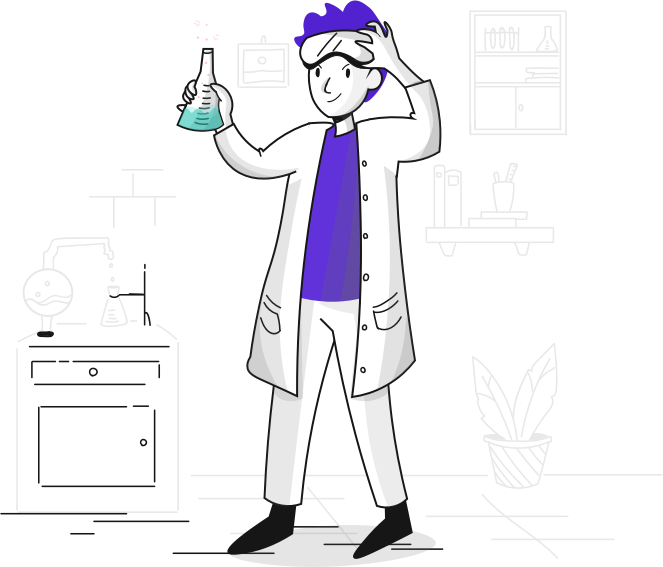
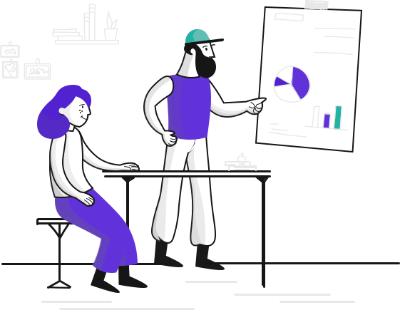

Durant l’année 2020, le DIL a collaboré étroitement avec l’ensemble des sites, répondant ainsi à leurs besoins en expérimentant plusieurs technologies autour de l’IoT, de l’Intelligence Artificielle, la réalité augmentée et les drones.

A cet effet, le DIL a organisé en début d’année, 2 bootcamps avec comme thématique principale "l’Internet des objets (IoT)". Les bootcamps de Youssoufia et Safi ont accueilli chacun une trentaine de participants qui représentaient les différents métiers de ces sites avec une hétérogénéité des profils pour couvrir l’ensemble des besoins existants. Ainsi, à la sortie de ces 2 bootcamps, ce sont 10 idées qui ont été sélectionnées par les différents workshops.
Concrètement, chaque bootcamp se compose d’une phase de workshop d’acculturation, suivie d’une phase d’idéation et en dernier d’une phase de sélection des idées les plus innovantes. A travers ces ateliers, le DIL a accompagné les Business Units à identifier les points de blocage (pain-points), puis à les orienter vers des solutions qui correspondent à leurs problématiques. Ainsi les métiers découvrent certaines technologies de pointe et sont donc acculturés sur leur usage et leur performance. En plus de cette phase de découverte, les profils variés des Business Units ont exploré, durant ces bootcamps, des technologies nouvelles dans une démarche de qualification.
Durant l’année 2020, d’autres solutions ont été expérimentées par le DIL en collaboration avec les métiers de différents sites. En effet, ces initiatives, qui étaient en 2020 en phase de cadrage et de prototypage, sont d’un apport considérable pour les opérations industrielles et stratégiques du Groupe. La technologie IoT a été la principale utilisée.
On peut citer en premier la maitrise de la pénétration dans les espaces confinés dont l’objectif est de suivre l’état des interventions et la sécurité des collaborateurs. Il s’agit de remonter en temps réel les niveaux de gaz dans les espaces confinés avec un live streaming capté par la caméra vidéo.

Ensuite, une solution de pilotage du chargement des trains était en cours de réalisation. Son objectif est de maîtriser la quantité chargée le long du wagon avec une activation automatique des chargements.
En dernier, à l’aide de l’IoT, la réduction des collisions entre machines était en développement. La solution d’anti-collision va anticiper et réduire les risques d’entrechocs entre les roupelles et les stackers.
En raison des mesures de restrictions imposées par la pandémie, la gouvernance a aussi été revue et réadaptée afin d’assurer l’engagement et le tracking de la création de valeur. Dès lors, le DIL a opté pour une Innovation pragmatique, c’est-à-dire se lancer dans des projets sur le court terme et avec un ROI probant. Cette réorientation vise un impact signifiant et une démarche pragmatique pour répondre avec agilité aux exigences opérationnelles. Le DIL a également mis en place une dynamique hebdomadaire pour chaque site avec l’ensemble des Product Owner (chef de projet) et référents métiers. Favorisant l’intelligence collective, cette gouvernance a pour objectif de communiquer sur l’avancement des sujets et remonter les éventuels blocages.


 Retour à l'accueil
Retour à l'accueil